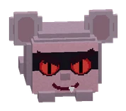
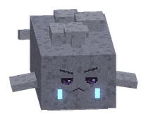

BossesBazen
Every boss: a fight for everyone nearby. Your loot is personal: everyone who did at least 5% of the work gets their own chest. Fainted? You wake up at the arena door. Bosses get stronger with more players.
Elke baas: een gevecht voor iedereen in de buurt. Buit is persoonlijk: iedereen die minstens 5% van het werk deed krijgt een eigen kist. Flauwgevallen? Je wordt wakker bij de arenadeur. Bazen worden sterker met meer spelers.
Click a zone to open it.Klik op een zone om hem open te klappen.
De Knuffelzwammen lv 1-20 4 bossesbazen
Story boss: click to showVerhaalbaas: klik om te kijken

De Mika-spion
Story bossVerhaalbaas
Hidden by your spoiler setting.Verborgen door je spoilerinstelling.
De Splinterpieken lv 20-30 3 bossesbazen
Hidden by your spoiler setting.Verborgen door je spoilerinstelling.
De Schemerwortel lv 30-50 9 bossesbazen

Hidden by your spoiler setting.Verborgen door je spoilerinstelling.
De Lampionkust lv 50-56 2 bossesbazen
Hidden by your spoiler setting.Verborgen door je spoilerinstelling.
Hoogvads lv 56-60 4 bossesbazen

Story boss: click to showVerhaalbaas: klik om te kijken

De Grauwe Droom
Story bossVerhaalbaas
Hidden by your spoiler setting.Verborgen door je spoilerinstelling.
Het Zijdeland lv 60-70 5 bossesbazen + raid

Hidden by your spoiler setting.Verborgen door je spoilerinstelling.